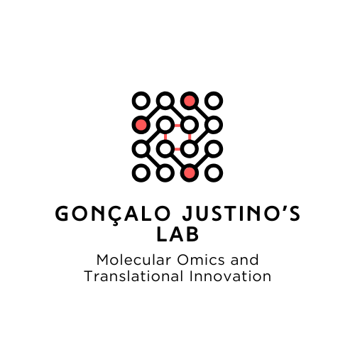

Justino Research Group
Integrative Biology & Omics Lab
We use mass spectrometry and computational tools to understand molecular mechanisms in health, disease, and drug action.
Explore research
Justino Research Group
We use mass spectrometry and computational tools to understand molecular mechanisms in health, disease, and drug action.
Explore research